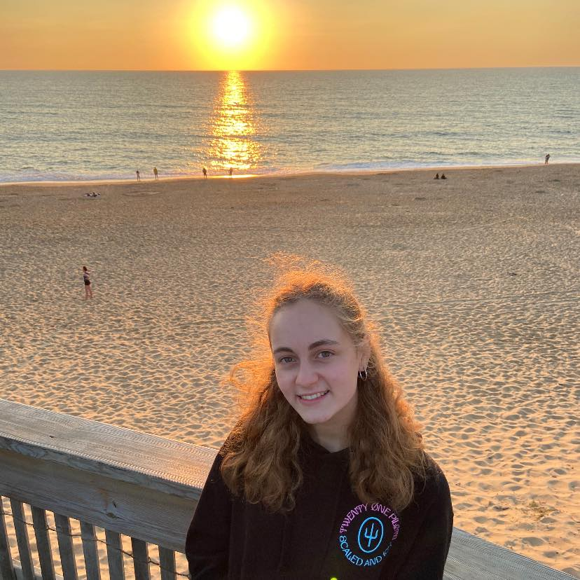

Hello ! Bienvenue :)

Je m'appelle Valentine, j'ai 18 ans, et voici ma présentation !
Découvrez ma start-up
À propos de moi
-
👱🏼♀️ Valentine
-
🎂 18 ans
-
📍 Lilloise
-
♒️ Verseau
Mes études
-
🎓 Depuis 2021 : IÉSEG School of Management (Lille)
-
🏫 2018-2021 : Lycée Paul Hazard (Armentières)
Ce que j'aime
-
🎻 La musique : Je pratique le violon alto depuis 10 ans en solo et en groupe, et il ne se passe pas une journée sans que je n'écoute de musique !
-
🏸 Le badminton : En famille ou entre amis, j'aime me défouler sur un terrain depuis 7 ans !
-
🍝 La gastronomie italienne : J'ai la chance d'avoir des origines italiennes et de la famille en Italie du Nord, ce qui m'a permis de visiter ce beau pays de nombreuses fois, d'où mon amour pour les pâtes à la bolognaise !
-
😋 La pâtisserie : Depuis petite, j'adore faire des gâteaux, et plus particulièrement des biscuits ! J'aime partager de bons moments en famille en cuisinant, mais ce que je préfère, c'est déguster les gâteaux !
-
🖋 La poésie : Je suis sensible à l'art de bien manier les mots, et je suis facilement émue pour une phrase bien formulée (bonus s'il y a des rimes) !
Mes objectifs pour 2022
Avoir mon permis de conduire 🚗, réussir dans mes études 📚 et être épanouie avec mes amis et ma famille 🥰